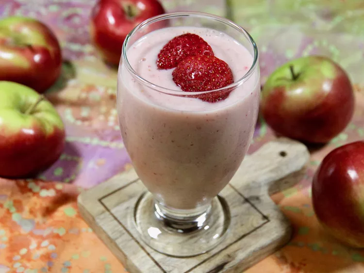

Apple, Strawberry, and Banana Smoothie

Description
Smoothie.
Ingredients
- 3/4 cup vanilla almond milk
- 1 apple - peeled, cored, and cubed
- 1 cup halved frozen strawberries
- 1 cup halved frozen strawberries
- 1/4 cup vanilla Greek yogurt
Recipe Instructions
- Place almond milk, apple, strawberries, banana, and yogurt in a blender,
being sure the milk goes in first. Process until smooth,
occasionally scraping down the sides of the blender with a rubber spatula,
if necessary.
- Pour into serving glasses and serve immediately.
Go Back